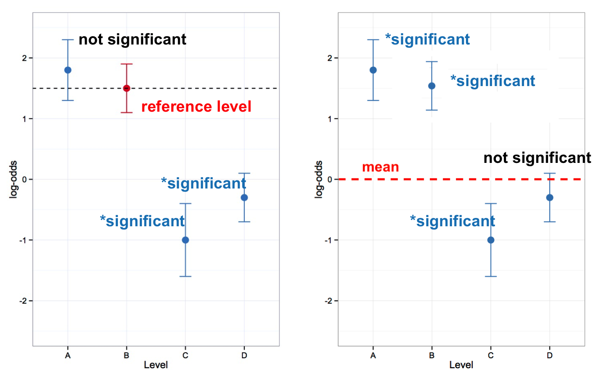

# Reorder levels of Dep.Var to make application
# value second
td$Dep.Var <- factor(td$Dep.Var, levels = c("Realized",
"Deletion"))
# Create New Column for binary Dependent
# Variable, all values 0
td$Dep.Var.Binary <- "0"
# Change all Dep.Var.Binary tokens to 1 where
# Dep.Var.Full is 'Deletion'.
td$Dep.Var.Binary[td$Dep.Var.Full == "Deletion"] <- "1"
# Make Dep.Var.Binary a factor column
td$Dep.Var.Binary <- factor(td$Dep.Var.Binary)Mixed-Efects Logistic Regression Analysis: Part 1
Doing a mixed-effects logistic regression analysis suitable for comparing to a Goldvarb analysis. Part 1: The Setup
Matt Hunt Gardner ![]()
Introduction
One of the best way to test multiple potential predictors of a variable phenomenon is with multivariate statistical modelling. Increasingly in variationist sociolinguistics, we are also taking into account potential random effects, like speaker, in our models. In R, a good way to perform multivariate statistical modelling that takes random effects into account is to create mixed-effects logistic regression model. This is the kind of modelling used by Rbrul (Johnson 2009),1 with which you may already be familiar. Logistic regression examines the relationship of a binary (or dichotomous) outcome (e.g., alive/dead, success/failure, yes/no, Deletion/Realized) with one or more predictors that may be either categorical or continuous. Calling a regression analysis “mixed-effects” simply means that it will consider some fixed effects (i.e., independent predictor variables) and at least one random effect (explained below).
What is a random effect?
Good question!
The in a regression analysis, the first step is to calculate the baseline odds/likelihood of having one outcome (i.e., the *application value**, Deletion) versus not having the outcome without considering any predictor variables. This gives us the constant (also known as the intercept or grand mean). The next step in a regression analysis is to consider the independent predictor variables and how including them in the model changes the odds/likelihood of having one outcome versus not having that outcome. These independent predictor variables are collectively called the fixed effects in the model.
Random effects, however, are variables we include in the model for which each level is understood to potentially have differing baseline odds/likelihoods . In other words, a mixed effects model assumes fixed effect independent variables are correlated to changes in odds/liklihood of the application value in the data (and determines whether those changes are significantly different from zero), while any variability across levels of the random effects variable is uncorrelated with the independent variables.
Given that sociolinguistic data usually includes an inconsistent number of tokens per speaker, it is a good idea to include speaker as a random effect when modelling variation. By doing so you can allow the model to consider each speaker to have a different baseline odds/likelihood (intercept) that is unrelated to other predictors in the model like Sex or Age.Group in the (t, d) data set. If fixed effects like Sex and Age.Group are returned as significant predictors of the variation, and Speaker was included as a random effect, we can say that the effect of Sex or Age.Group is significant over and above the potential random effect of individual Speaker. Including speaker as a random effect also overcomes the non-indendence introduced by having multiple observations from the same individual.
Before you continue, it’s worth pointing out that as variationist sociolinguists, we use regression analyses to provide statistical validation for the acceptance or rejection of hypotheses and/or to confirm trends observed in summary statistics. The key facts that you use to do this are generally referred to as the “three lines of evidence” and are found in the results of Goldvarb’s step-up/step-down method of variable rule analysis (or in Rbrul’s mixed-effects logistic regression analysis, which mimics Goldvarb’s output).
What are the Three Lines of Evidence?
- statistical significance — what independent variables, e.g., factor groups, are significant predictors of the variation and which are not.
- magnitude of effect — the relative ordering of predictors, e.g., significant factor groups, based on their magnitude of effect on the variation.
- constraint hierarchy/direction of effect — the relative ordering of levels of a predictor, e.g., factors within a factor group, from the level with the greatest positive effect to the level with the greatest negative effect on the overall probability.
Based on Poplack & Tagliamonte 2001: 92; Tagliamonte 2002: 731; Tagliamonte 2006: 235, etc.
In a standard Goldvarb/Rbrul analysis, the first line of evidence is determined by what factor groups (predictors) are selected in the best step-up/step-down run, the second line of evidence is determined by the range of the factor weights in each of the significant factor groups (predictor), and the third is determined by the ordering of factors (levels) within each factor group (predictor) based on each factor’s (level’s) factor weight. Mixed-effects logistic regression modelling in R does not provide the exact same step-up/step-down analysis with factor weights that Goldvarb/Rbrul provides; however, it does provide facts that are analogous to to the three lines of evidence.
Factors, Factor Groups, Predictors, Levels — What’s the difference?
In Goldvarb parlance, independent variables in an analysis — like Phoneme and Sex in the (t, d) data set) are called factor groups and the different options for these factor groups are called factors (t vs. d, Male vs. Female). For regression modelling, independent variables in the analysis are usually called predictors and the different options for these predictors are called levels of that predictor.
There are two styles of mixed-effects logistic regression models commonly used by sociolinguists. One style is to look at whether or not the levels of a predictor are significantly different from the mean of that predictor. This is roughly what Goldvarb does. Factor weights are centred around .50, and significant factor groups are those where the factor weights of the factors are significantly different from .50. The equivalent logistic regression style in R tests what are called sum contrasts between levels of a predictor. The second style, which tests treatment contrasts, examines whether the levels of a predictor are significantly different from each other, rather than the mean. In this type of analysis one level is selected as a reference to which all other levels are compared. You can see the difference between sum and treatment contrasts in Table 1.

In Part 2 you will do an analyses with sum contrasts, then in Part 4 you will do the same analysis, but with treatment contrasts. While sum contrasts are consistent with a Goldvarb-type analysis, you can probe the constraint hierarchy of your fixed effects using treatment contrasts in a way not otherwise possible.
Making Your Depandent Variable Binary
I recommend labelling application value tokens with 1 and non-application values as 0 because R eventually does this behind the scenes anyway. For example, with the ctree() function (Conditional Inference Trees) and glmer() function below, the dependent variable used is Dep.Var. This variable has two levels Realization and Deletion. Before using these values in either model, R will convert each level to 0 and 1 in alphabetical order. So here Deletion becomes 0 and Realization becomes 1. This causes complications for us because, for both ctree() and glmer(), likelihood is expressed as the likelihood of 1, and 1 here is the non-application value. You don’t want to use the likelihood of the non-application value in your manuscript tables and charts! You want to include values in your tables and charts that reflect the probability of, in this case, 0.2
There are two ways to overcome the above problem. You can change the ordering of the factors in the Dep.Var column so that the non-application value will be converted to 0 and the application value will be converted to 1. This is exactly what was done when constructing the ctree() in Conditional Inference Trees by changing the order of the levels in Dep.Var to Realized then Deletion (so Realized becomes 0 and Deletion becomes 1). Alternatively, you can create a new column with Realization tokens coded as 0 and Deletion tokens coded as 1 (see the tip below), then use that new column in your models. The one disadvantage to this method is that in your figures, like the ctree() figure created in Conditional Inference Trees, the names of the two levels of Dep.Var on the figure itself will be 1 and 0. For the glmer() function this doesn’t really matter.
Get the data first
If you don’t have the td data loaded in R, go back to Doing it all again, but tidy and run the code.
A Note on Dependent Variables with 3+ levels
Both the ctree() and glmer() functions require binary dependent variables. If you have a study in which you have a dependent variable with multiple variants (like the Dep.Var.Full column), you should make a separate column in which all the tokens with the application value are labelled as one thing, and all the tokens with any non-application value are labelled with another (this is effectively what the Dep.Var column is).
Making this binary column is quite easy in R. I like to use the binary values 1 and 0, with 1 as my application value and 0 as my non-application value. To do this recode, first you create a new column and make every value 0. Then you change the value in this column to 1 for every token where Dep.Var.Full equals the application value. Lastly you make this column a factor column (though you could use the function as.numeric() to make a numeric column, if that were needed).
Footnotes
Rbrul is a very useful variable rule analysis script that runs in R. Often Rbrul acts as a bridge for variationists familiar with Goldvarb who want to try running analyses in R. You can use Rbrul, or you can just use the same functions that Rbrul uses. The advantage of not using Rbrul is that you can preserve the steps you took to create the model in a script file — insuring easy replicability. For more information about Rbrul see http://www.danielezrajohnson.com/rbrul.html.↩︎
I also recognize that labelling the application value as
1can get confusing when the phenomenon in question isDeletion. This is the advantage of having twoDep.Varcolumns: one with the dependant variable clearly labeled (e.g.,DeletionandRealized), and another column with the dependent variable in binary format (e.g.,1and0). Having both ensures you are never confused as to what the simplified binary coding means.↩︎
Reuse
CC-BY-SA 4.0
Citation
BibTeX citation:
@online{gardner,
author = {Gardner, Matt Hunt},
title = {Mixed-Efects {Logistic} {Regression} {Analysis:} {Part} 1},
series = {Linguistics Methods Hub},
volume = {Doing LVC with R},
date = {},
url = {https://lingmethodshub.github.io/content/R/lvc_r/110_lvcr.html},
doi = {10.5281/zenodo.7160718},
langid = {en}
}
For attribution, please cite this work as:
Gardner, Matt Hunt. n.d. Mixed-Efects Logistic Regression Analysis: Part
1. Linguistics Methods Hub: Doing LVC with R. (https://lingmethodshub.github.io/content/R/lvc_r/110_lvcr.html).
doi: 10.5281/zenodo.7160718